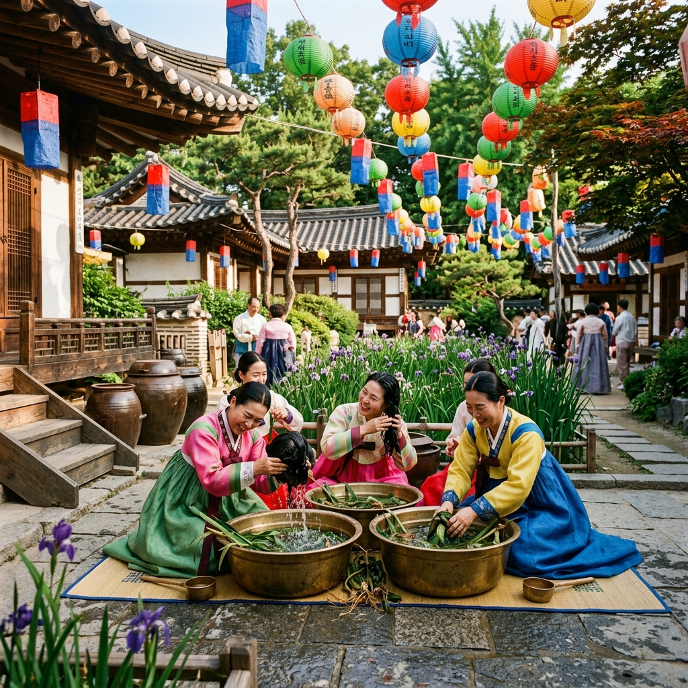
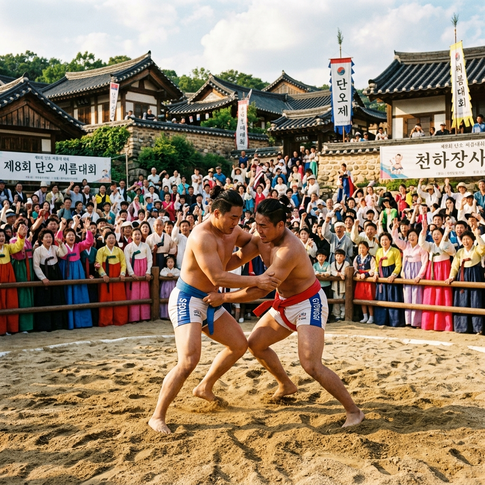
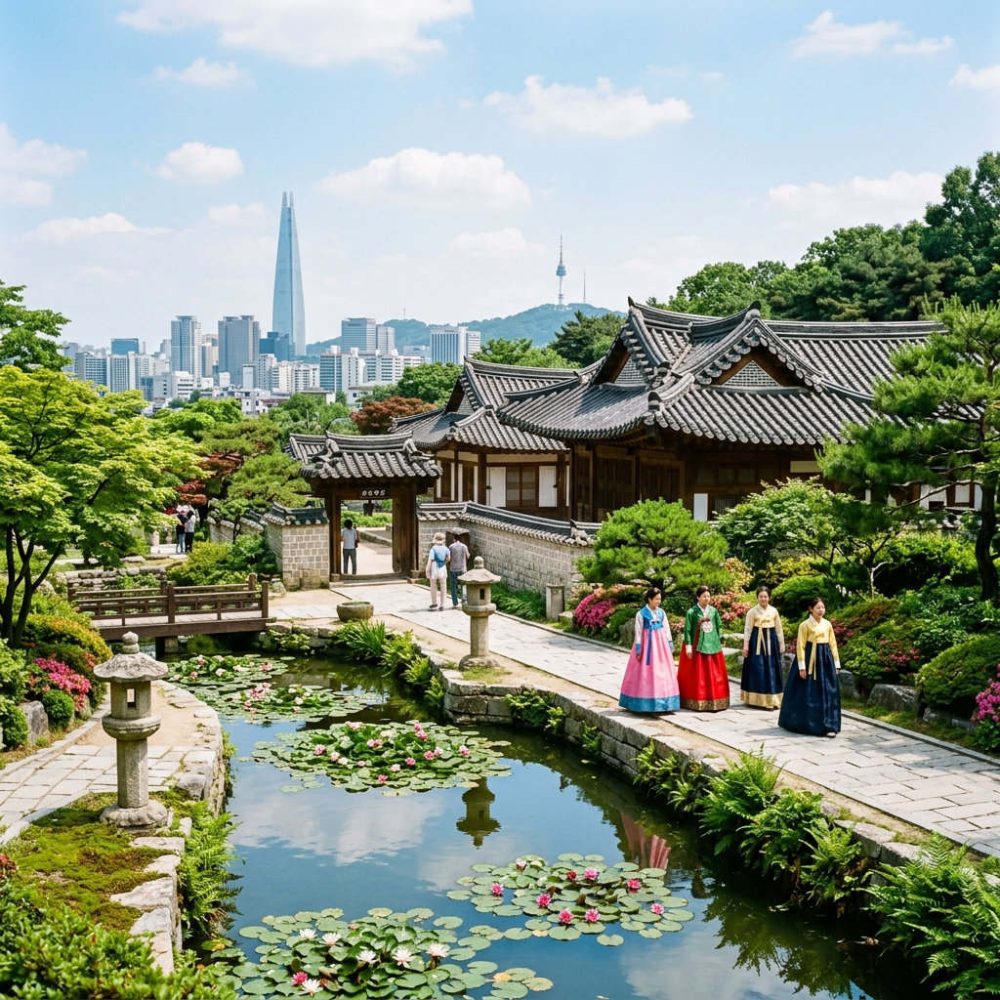

서울 남산골한옥마을 단오 체험, 창포·그네·씨름으로 즐기는 전통 명절
서울 한복판에서 전통 명절의 정취를 온몸으로 느낄 수 있는 특별한 하루가 있습니다. 바로 단오입니다. 2026년 단오는 음력 5월 5일, 양력으로 6월 19일 금요일에 돌아옵니다. 중구 퇴계로34길 28에 자리한 남산골한옥마을은 해마다 단오를 전후해 창포물 세발, 그네타기, 씨름 관람, 수리취떡 시식, 전통 부채 만들기 등 다채로운 체험 행사를 운영합니다. 입장은 무료이며, 고즈넉한 전통 가옥 다섯 채와 정원이 서울 도심 속 특별한 배경이 되어 줍니다. 지하철 충무로역에서 도보 10분이면 닿을 수 있어 접근성도 훌륭합니다. 이번 6월, 단오의 깊은 의미와 함께 남산골한옥마을 단오 행사를 제대로 즐기는 방법을 낱낱이 소개합니다.
단오란 무엇인가 — 음력 5월 5일 세시풍속
단오(端午)는 음력 5월 5일로, 설날·추석·한식과 함께 우리나라 4대 명절 중 하나로 손꼽힙니다. '단(端)'은 처음, '오(午)'는 다섯을 뜻하니, 문자 그대로 '초닷새'를 가리키는 이름입니다. 홀수가 겹치는 날을 길일로 보는 동아시아 전통에서 5월 5일은 양기(陽氣)가 가장 왕성한 날로 여겨졌습니다.
단오는 모내기를 끝낸 농경사회에서 노동의 고됨을 잠시 내려놓고 풍년을 기원하는 축제이기도 했습니다. 강릉 단오제는 유네스코 인류무형문화유산으로 등재될 만큼 그 문화적 가치가 세계적으로 인정받고 있습니다. 강릉 단오제만큼 화려하지는 않더라도, 서울 곳곳에서도 단오의 전통은 면면히 이어져 왔습니다.
단오의 대표 풍속으로는 창포물에 머리를 감고 목욕하는 '창포욕', 여성들의 그네타기, 남성들의 씨름, 부채 선물하기, 쑥과 수리취로 만든 떡 먹기 등이 있습니다. 이 중 많은 것들이 오늘날에도 행사로 재현되어 도시민들에게 전통의 의미를 전달합니다.
창포는 여름 전염병과 잡귀를 물리치는 식물로 알려져, 단오에 창포를 삶은 물로 머리를 감으면 머리카락이 윤기 있고 건강해진다고 믿었습니다. 부채는 더위를 이기라는 의미로 아랫사람에게 나눠주는 '하선동력(夏扇冬曆)' 문화의 일부였습니다. 단오는 단순한 놀이 축제가 아니라 건강과 풍요를 기원하는 의식이 담긴 뜻깊은 명절입니다.
현대에 와서 단오는 점차 잊혀가는 명절이지만, 남산골한옥마을 같은 공간이 전통 행사를 기획하고 운영함으로써 도시 아이들과 젊은 세대에게 살아있는 전통문화를 체험할 수 있는 소중한 기회를 제공하고 있습니다. 한 번쯤 교과서 밖에서 직접 몸으로 느끼는 단오를 경험해 보시기를 권합니다.
2026년 단오, 6월 19일 금요일
2026년 단오는 음력 5월 5일로, 양력으로는 6월 19일 금요일입니다. 금요일에 단오가 돌아온 덕분에 주말을 앞두고 퇴근 후 방문하거나, 토요일을 연계해 여유롭게 즐길 수 있는 기회가 생깁니다.
남산골한옥마을의 단오 행사는 통상 단오 당일을 전후한 2~3일간 집중적으로 운영됩니다. 2026년에는 6월 17일(수)부터 6월 19일(금)까지 3일간 행사가 열릴 가능성이 높습니다. 다만 공식 일정은 남산골한옥마을 공식 홈페이지 및 서울시 공공서비스예약(yeyak.seoul.go.kr) 등에서 반드시 최신 공지를 확인하시기 바랍니다.
6월 19일 금요일 당일은 단오 행사 절정 날로, 창포물 세발 체험부터 씨름 결승, 그네타기 대회, 전통 공연까지 가장 풍성한 프로그램이 준비될 것으로 기대됩니다. 평일이라 학생 단체 방문도 많으니 오전 일찍 도착하면 여유롭게 체험할 수 있습니다.
단오 행사가 아닌 날에도 남산골한옥마을은 일상적으로 개방되어 있습니다. 입장 시간은 오전 9시부터 오후 9시까지(하절기)이며, 매주 월요일이 휴무입니다. 단오 기간에는 특별히 연장 운영하거나 휴무 없이 진행하는 경우도 있으니 방문 전 사전 확인이 필수입니다.
6월 중순이면 서울 기온이 25~30도에 이를 수 있으므로 가벼운 여름 옷차림과 함께 선크림, 부채 혹은 양산을 준비하면 야외 행사를 더욱 편안하게 즐길 수 있습니다. 단오에 선물받는 전통 부채와 함께라면 더위도 훨씬 가볍게 느껴질 것입니다.

창포물 세발 체험 현장 / AI 제작 이미지
남산골한옥마을 소개 및 단오 행사 개요
남산골한옥마을은 서울 중구 퇴계로34길 28, 남산 북쪽 기슭에 자리한 전통 문화 공간입니다. 조선 시대 서울 각지에 흩어져 있던 전통 가옥 다섯 채를 이전·복원해 1998년에 개관했으며, 전통 정원과 연못, 타임캡슐 광장까지 갖추고 있어 도심 속 고즈넉한 산책 명소로 인기가 높습니다.
다섯 채의 전통 가옥은 각각 개성 있는 이름과 역사를 가지고 있습니다. 순정효황후 친가인 옥인동 윤씨가옥, 조선 말기 중인 집인 관훈동 민씨가옥, 삼청동에 있던 제기동 해풍부원군이씨가옥 등이 대표적입니다. 건물 내부까지 개방하는 행사 기간에는 조선 시대 생활상을 더욱 가까이에서 살펴볼 수 있습니다.
단오 행사는 한옥마을 내 야외 마당과 행사장에서 펼쳐집니다. 주요 프로그램은 창포물 세발 체험, 그네타기, 씨름 관람, 수리취떡 시식, 전통 부채 만들기, 단오 관련 전통 공연(농악, 민요 등)이며, 연도에 따라 한지 공예, 전통 놀이 체험, 탁본 체험 등이 추가되기도 합니다.
남산골한옥마을 바로 옆에는 서울남산국악당이 위치해 있어, 단오 기간에는 국악 공연이나 전통 무용 공연이 함께 열리는 경우도 있습니다. 국악당 공연은 별도 예약이 필요할 수 있으니 미리 확인해 두시는 편이 좋습니다.
행사 입장은 기본적으로 무료이나, 창포물 세발·부채 만들기 등 일부 체험 프로그램은 소정의 재료비 또는 참가비가 발생할 수 있습니다. 행사 규모와 세부 프로그램은 매년 조금씩 달라지므로, 서울시 공식 안내나 남산골한옥마을 SNS 채널을 통해 최신 정보를 확인하는 것이 가장 정확합니다.
창포물 세발 체험 — 전통 머리 감기 체험
단오 행사 중 가장 상징적인 체험을 꼽으라면 단연 창포물 세발(洗髮)입니다. '창포(菖蒲)'는 연못가나 습지에서 자라는 붓꽃과의 여러해살이 식물로, 특유의 향긋한 향기와 함께 예부터 벌레를 쫓고 건강을 지키는 식물로 여겨져 왔습니다.
단오에 창포 잎과 뿌리를 삶아 우린 물로 머리를 감으면 머리카락이 풍성해지고, 두피 질환을 예방하며, 몸에 잡귀가 침범하지 못한다고 믿었습니다. 창포의 향기 성분인 아사론(asarone)은 실제로 항균 및 진정 효과가 있다고 알려져 있어, 선조들의 지혜가 과학적으로도 뒷받침되는 흥미로운 사례입니다.
남산골한옥마을 단오 행사에서는 전통 놋그릇이나 세숫대야에 창포물을 준비해 두고, 방문객들이 직접 손을 담그거나 머리에 창포물을 부어 보는 체험을 진행합니다. 어린이들은 물놀이처럼 즐기고, 어른들은 전통 풍속의 의미를 되새기며 참여하는 모습이 인상적입니다.
창포물은 연한 녹황색을 띠며 은은한 약초 향이 납니다. 창포의 긴 잎 줄기를 이용해 머리에 비녀처럼 꽂아 장식하는 '창포잠(菖蒲簪)' 풍속도 함께 재현됩니다. 한복을 갖춰 입고 창포잠을 꽂으면 사진 명소가 따로 없을 만큼 예쁜 전통 이미지를 연출할 수 있습니다.
체험 시간대는 보통 오전 10시부터 오후 4시까지 운영되며, 인원 제한이 있는 경우 번호표를 미리 받아야 할 수도 있습니다. 가능하면 오전에 서둘러 도착해 창포물 체험을 먼저 마치고, 이후 다른 프로그램으로 이어가는 동선을 추천합니다.
그네타기·씨름 — 단오 전통 놀이 현장
단오에 빼놓을 수 없는 놀이가 바로 그네타기와 씨름입니다. 두 놀이 모두 조선 시대부터 단오의 대표 여가 활동으로 자리 잡았으며, 오늘날에도 단오 행사의 핵심 볼거리로 남아 있습니다.
그네타기는 전통적으로 여성들의 단오 놀이였습니다. 높다란 나무에 줄을 매달아 설치한 그네를 타며 하늘 높이 치솟는 즐거움을 만끽했습니다. 남산골한옥마을 마당에는 단오 기간에 전통 그네가 설치됩니다. 아이들과 방문객이 직접 탈 수 있도록 체험 기회를 제공하며, 한복 차림으로 그네를 타는 모습은 인상적인 사진으로도 남길 수 있습니다.
씨름은 남성들의 단오 놀이를 대표합니다. 모래판에서 샅바를 잡고 상대방을 넘어뜨리는 우리 고유의 격투기로, 단오 씨름 대회는 조선 시대부터 마을 단위로 열렸습니다. 남산골한옥마을 단오 행사에서는 전통 씨름 시연 또는 어린이 씨름 체험을 제공해 구경거리와 참여 활동을 모두 즐길 수 있습니다.
그네와 씨름 외에도 윷놀이, 제기차기, 투호 등 다양한 전통 놀이 코너가 마련됩니다. 투호는 일정 거리에서 항아리 안에 화살 모양의 막대를 던져 넣는 놀이로, 남녀노소 누구나 쉽게 참여할 수 있어 인기가 높습니다. 가족 단위 방문객이라면 아이와 함께 전통 놀이를 즐기며 유익한 시간을 보낼 수 있습니다.
행사장 내 놀이 코너는 대부분 무료로 운영되며, 줄이 길어지는 인기 코너는 대기 시간이 발생할 수 있습니다. 씨름 시연 공연의 경우 특정 시간대에만 진행되므로, 미리 일정표를 확인하고 그 시간에 맞춰 이동하면 놓치지 않을 수 있습니다.

단오 씨름 시연 현장 / AI 제작 이미지
수리취떡과 단오 먹거리 즐기기
단오 음식의 대표 주자는 단연 수리취떡(수리취절편)입니다. 수리취는 국화과의 여러해살이 풀로, 단오 즈음 초록빛 어린잎이 풍성하게 자랍니다. 이 잎을 곱게 찧어 찹쌀가루와 섞어 쪄낸 것이 수리취떡으로, 은은한 풀향기와 쫄깃한 식감이 특징입니다.
수리취떡의 모양도 특별합니다. 수레바퀴 모양의 떡살로 눌러 찍어내는 것이 전통 방식으로, '수리'라는 이름 자체가 '수레'를 뜻하는 우리말에서 유래했다는 설이 있습니다. 수레바퀴처럼 굴러가는 힘찬 여름을 기원하는 의미가 담겨 있기도 합니다.
남산골한옥마을 단오 행사에서는 수리취떡 시식 코너를 운영하거나, 직접 만들어보는 체험 프로그램을 제공하기도 합니다. 갓 쪄낸 수리취떡의 향기와 맛은 단오 현장에서만 느낄 수 있는 특별한 경험입니다. 참기름을 살짝 발라 먹으면 더욱 고소한 맛이 납니다.
수리취떡 외에도 단오 즈음에는 쑥으로 만든 음식들이 다양하게 등장합니다. 쑥버무리, 쑥개떡, 쑥국 등이 계절 먹거리로 인기를 끕니다. 행사장 인근이나 명동·충무로 일대의 떡 전문점에서 단오 시즌 한정 메뉴를 판매하는 경우도 있으니 식도락 여행을 겸해도 좋습니다.
음료로는 창포를 활용한 전통 음청류나 오미자 화채, 식혜가 제격입니다. 남산골한옥마을 내 전통 찻집 혹은 주변 카페에서 전통 음료를 곁들이며 잠시 쉬어 가는 시간도 행사 관람의 즐거움을 배가시켜 줍니다.
전통 부채 만들기 체험 프로그램
단오에는 임금이 신하들에게 부채를 하사하고, 어른들이 아랫사람에게 부채를 선물하는 풍속이 있었습니다. 이를 '단오선(端午扇)'이라 하며, 여름의 시작을 앞두고 더위를 이겨내라는 따뜻한 의미가 담겨 있습니다. 조선 시대 최고의 부채 산지인 전주·나주에서 올라온 합죽선·태극선이 서울 거리를 화려하게 장식했다는 기록도 남아 있습니다.
남산골한옥마을 단오 행사에서는 직접 전통 부채를 꾸며보는 부채 만들기 체험을 운영합니다. 미리 제작된 한지 부채 틀에 한국화 기법으로 꽃, 새, 산수 등의 문양을 그려 나만의 단오선을 완성하는 프로그램입니다. 단청 색감의 물감을 사용하면 더욱 전통 느낌이 살아납니다.
부채 만들기 체험은 주로 소정의 재료비(1,000~3,000원 수준)를 내고 참여하는 방식으로 운영됩니다. 완성된 부채는 그날 바로 들고 갈 수 있어, 행사의 기념품이자 실용적인 여름용품이 됩니다. 특히 어린이들에게 인기가 매우 높아 오전 일찍 마감되는 경우도 있습니다.
부채 외에도 전통 매듭 팔찌 만들기, 향낭(향주머니) 만들기, 단오 문살 붙이기 등 다양한 공예 체험 프로그램이 함께 마련될 수 있습니다. 행사 일정에 따라 프로그램 구성이 달라지므로, 현장 도착 후 안내 부스에서 당일 프로그램 목록을 먼저 받아보시기 바랍니다.
공예 체험 후에는 완성된 작품을 배경으로 한옥마을 마당에서 기념사진을 남겨 보세요. 전통 가옥의 처마선과 정원을 배경으로 한 사진은 누가 찍어도 그림처럼 아름답게 나옵니다. SNS에 올리면 반응이 폭발적일 것입니다.
한옥마을 산책 코스 및 볼거리
남산골한옥마을은 단오 행사 외에도 그 자체로 서울의 알짜 산책 코스입니다. 총면적 약 7만 9천 제곱미터에 달하는 넓은 부지에 전통 가옥, 정원, 연못, 광장이 조화롭게 배치되어 있습니다. 남산의 푸른 숲과 시내 마천루가 동시에 보이는 이색적인 풍경도 이곳만의 매력입니다.
전통 가옥 다섯 채는 각각 다른 시기와 계층의 생활상을 반영하고 있어, 천천히 둘러보면 조선 시대 건축과 실내 구조의 변화를 한눈에 볼 수 있습니다. 사랑채, 안채, 별채의 배치와 창호지 문, 대청마루 등 전통 건축 요소를 세세히 관찰하는 재미도 쏠쏠합니다.
마을 중앙의 전통 연못과 정자는 사진 명소로 손꼽힙니다. 연못가에는 6월이면 수련과 붓꽃이 피어나 물 위를 아름답게 장식합니다. 단오 행사 기간에는 연못 주변에 각종 장식이 더해져 더욱 그림 같은 풍경이 펼쳐집니다.
타임캡슐 광장도 빼놓을 수 없는 명소입니다. 1994년 서울 정도 600주년을 기념해 묻은 타임캡슐이 광장 한편에 표시되어 있으며, 개봉 예정 연도인 2394년까지 보관되는 역사의 산증인입니다. 광장 주변의 조각 작품들도 인상적입니다.
한옥마을 관람 동선은 1~2시간이면 충분하지만, 단오 행사 기간에는 체험 프로그램과 공연 관람을 포함하면 반나절도 훌쩍 지나갑니다. 관람 중간 마당에 마련된 쉼터나 행사 부스에서 전통 음식을 맛보며 충분히 여유를 즐기시기 바랍니다.

남산골한옥마을 전통 정원과 연못 / AI 제작 이미지
남산 올레길 연계 코스
남산골한옥마을 방문 후 에너지가 남아 있다면, 바로 인접한 남산 올레길을 이어서 걷는 것을 적극 추천합니다. 한옥마을 뒤편의 계단을 오르면 남산 순환로와 연결되며, 거기서부터 남산 정상 방향으로 약 1.5km를 오르면 N서울타워가 있는 남산 정상 공원에 도달합니다.
남산 올레길은 총 2개 코스로 나뉩니다. 1코스(남산 둘레길)는 남산 중턱을 따라 순환하는 코스로 경사가 완만해 老若男女 누구나 부담 없이 걸을 수 있습니다. 2코스(남산 정상 코스)는 한옥마을에서 정상까지 직선으로 올라가는 길로 약 40분이 소요됩니다.
6월 남산은 신록이 절정을 이룹니다. 아카시아꽃이 지고 청청한 여름 나무들이 터널을 이루는 시기로, 산책하는 것만으로도 초록의 기운이 온몸에 전해집니다. 단오 행사 후 땀을 식히며 남산 산책로를 걷는 것은 서울 도심에서 누릴 수 있는 최고의 힐링 코스입니다.
남산 정상에서는 서울 시내 전망이 360도로 펼쳐집니다. N서울타워의 전망대에 오르면 날씨가 맑은 날에는 인천 앞바다까지도 보입니다. 해질 녘 노을이 물드는 풍경은 단오의 하루를 아름답게 마무리하는 황홀한 마침표가 됩니다.
하산은 명동 방향(케이블카 또는 계단)이나 장충동 방향으로 내려올 수 있습니다. 장충동 방향으로 내려오면 장충단공원, 동국대학교 앞의 족발 골목이 나오니, 저녁 식사로 장충동 족발을 즐기는 것도 좋은 선택입니다.
교통·주차·관람 꿀팁
대중교통을 이용하면 가장 편리합니다. 지하철 3·4호선 충무로역 4번 출구로 나와 도보 약 10분이면 남산골한옥마을 정문에 도착합니다. 또는 지하철 3·4호선 명동역 3번 출구에서 도보 약 15분, 혹은 402번·2번 버스를 이용해 남산골한옥마을 정류장에서 하차하는 방법도 있습니다.
자가용을 이용할 경우, 한옥마을 인근에 전용 주차장이 없어 주변 유료 주차장을 이용해야 합니다. 충무로·필동 일대 공영주차장을 이용하거나, 인근 백화점 주차장을 활용하면 됩니다. 단오 행사 기간에는 방문객이 몰려 주차 공간 확보가 어려울 수 있으므로 대중교통 이용을 강력히 권장합니다.
관람 팁을 몇 가지 정리합니다. 첫째, 단오 행사 기간에는 오전 10시 이전에 도착하면 여유롭게 체험 등록을 할 수 있습니다. 오후 1~3시가 피크타임이라 모든 프로그램에 대기 줄이 길어집니다. 둘째, 한복을 입고 방문하면 분위기가 배가됩니다. 인근 명동이나 충무로 한복 대여점에서 간편하게 한복을 빌릴 수 있습니다.
셋째, 현장 프로그램 안내 책자를 입구에서 반드시 챙기세요. 각 프로그램의 운영 시간과 장소가 상세히 나와 있어 동선 계획에 큰 도움이 됩니다. 넷째, 물과 간식을 미리 준비하거나, 행사장 내 푸드트럭 및 간식 부스에서 전통 먹거리를 구입할 수 있습니다. 다섯째, 단오 전통 공연은 보통 낮 12시와 오후 2~3시에 집중되므로 이 시간대에 행사장 중앙에 자리를 잡는 것이 좋습니다.
마지막으로, 남산골한옥마을은 어린이들에게 특히 교육적인 공간입니다. 전통 놀이, 먹거리, 체험 모두 살아있는 역사 교육이 됩니다. 이번 단오, 아이의 손을 잡고 600년 역사의 도시 서울 한가운데서 전통 명절의 정취를 함께 느껴보시기 바랍니다.
| 항목 | 내용 |
|---|
| 위치 | 서울 중구 퇴계로34길 28 (필동2가) |
| 2026년 단오 | 6월 19일(금) — 행사 6월 17~19일 전후 예정 |
| 입장 시간 | 09:00~21:00 (하절기), 월요일 휴무 |
| 입장료 | 무료 (일부 체험 프로그램 소정 재료비) |
| 교통 | 충무로역 4번 출구 도보 10분 / 명동역 3번 출구 도보 15분 |
| 주차 | 전용 주차장 없음, 대중교통 이용 권장 |
| 문의 | 남산골한옥마을 (02-2261-0517) |
#남산골한옥마을
#단오체험
#서울전통문화
#창포물세발
#씨름그네
#수리취떡
#단오부채
#6월서울여행
#충무로여행
#한옥마을산책